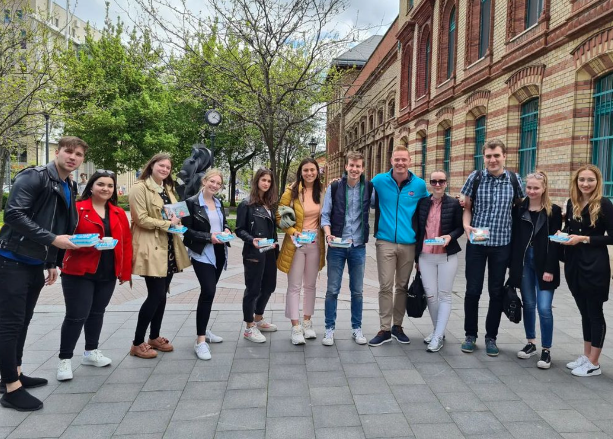
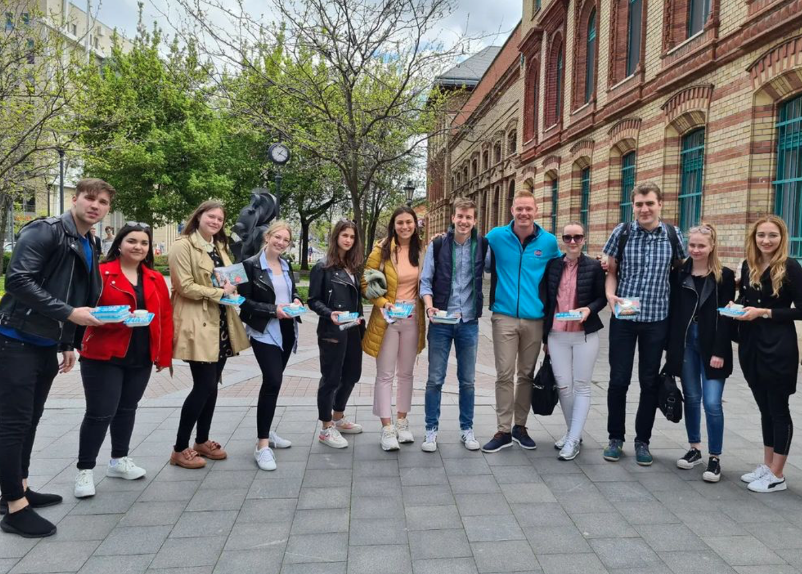

A WAVE olyan eseményeket szervez, amelyek kimozdítják a hallgatót a megszokott egyetemi hétköznapokból. Célunk, hogy egyedi, szórakoztató rendezvényeinkkel közelebb hozzuk egymáshoz a corvinusosokat, valamint előadásaink során olyan témákkal foglalkozzunk, amelyek felkeltik a diákság érdeklődését.
Diákszervezetünk rendszeresen szervez aktív, sportos eseményeket, gyűjtöttünk adományokat a MikulásGyár számára, továbbá magunk mögött tudhatunk már számos kerekasztal beszélgetést és interjút személyes, valamint online formában egyaránt.
Az elmúlt másfél évben vendégünk volt több ismert partiszervező, fiatal világjárók, valamint olyan nagy nevek, mint Kiss Gergely, Baji Balázs, Dr. Kiss Róbert Richárd, Gerendai Károly, Kádár Tamás, a GROW Csoport, továbbá a Réthy Fashion és a Munch.hu alapítói.
A legutóbbi félévben is számos projekt került lebonyolításra, mint például az Enter Barral együttműködve lebonyolított Fifa-bajnokság, az Egyetemes Borral való együttműködés keretein belül megtartott borkurzus és borkóstoló, valamint a Corvinus Hallgatói Önkormányzattal közösen szervezett Techno Jóga. Idén az éves jótékonysági eseményünkhöz a Cipősdoboz Akciót választottuk partnernek, akikkel először, de reméljük nem utoljára dolgozunk majd együtt.
 
